Same app, same 145 unit + 33 e2e tests, same features. The "before" set was shot prior to D0; the "after" set is the shipped Ember & Wash system (DESIGN.md): warm OKLCH neutral ramp, per-show adaptive palette from generated artwork, hero-first now-playing, capsule mini-player, bottom sheets, and compositor-only motion.
Before: text rows with identical badges, one flat gray. After: generated cover art per show (node graph, bars, caret, waves, globe, rings, embers, weave), warm surfaces, artwork-led cards.
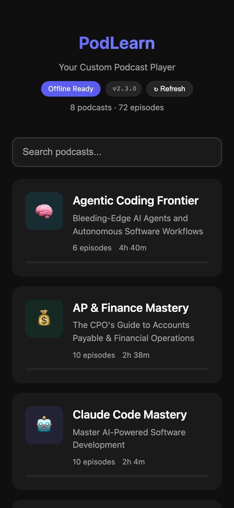
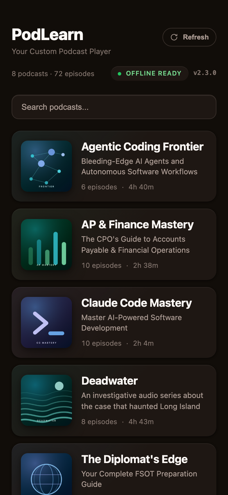
After: artwork-tinted header wash in the show's hue, pill filter chips, EPISODE kickers in the show accent, in-progress micro-badges and remaining-time meters.
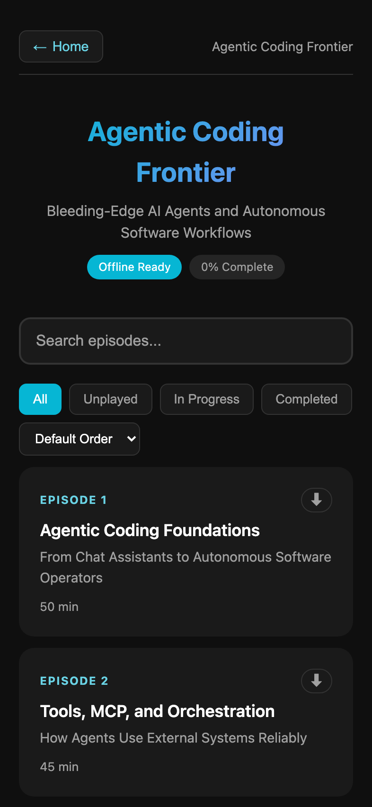
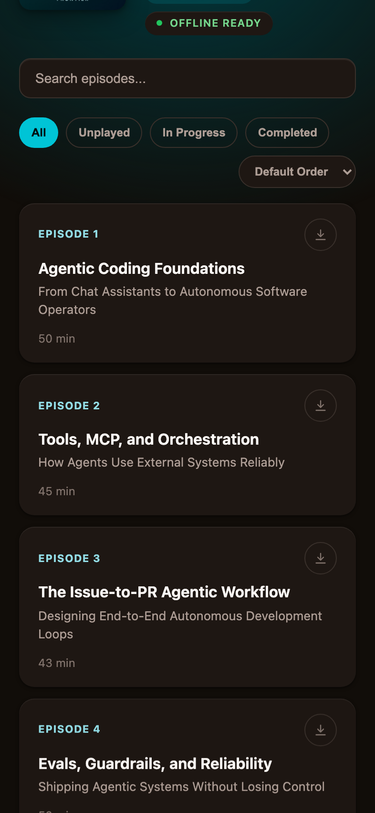
Before: wall of gray panels, no artwork, no focal point. After: hero artwork with ambient show-hue glow, balanced display title, chapter chip, tick-marked scrubber with tabular times, 72px show-accent play disc with dark ink, quiet secondary icon row; settings demoted to the ⋯ sheet.
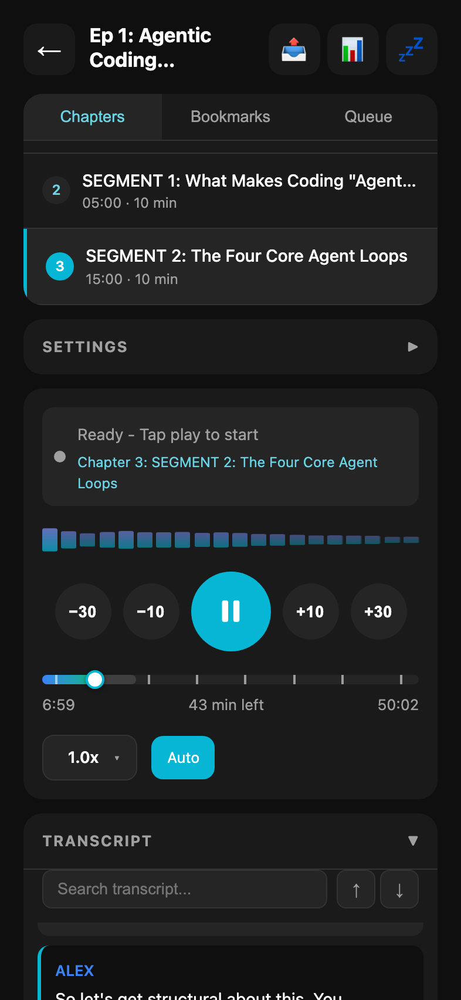
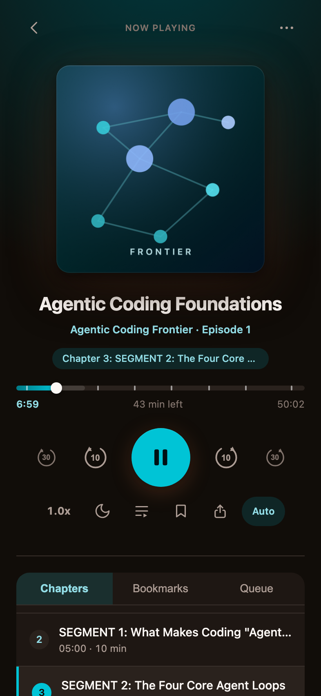
After: transcript lives below the fold seam as a quiet surface-1 panel; current line carried by an accent spine, resync pill floats in the show accent.
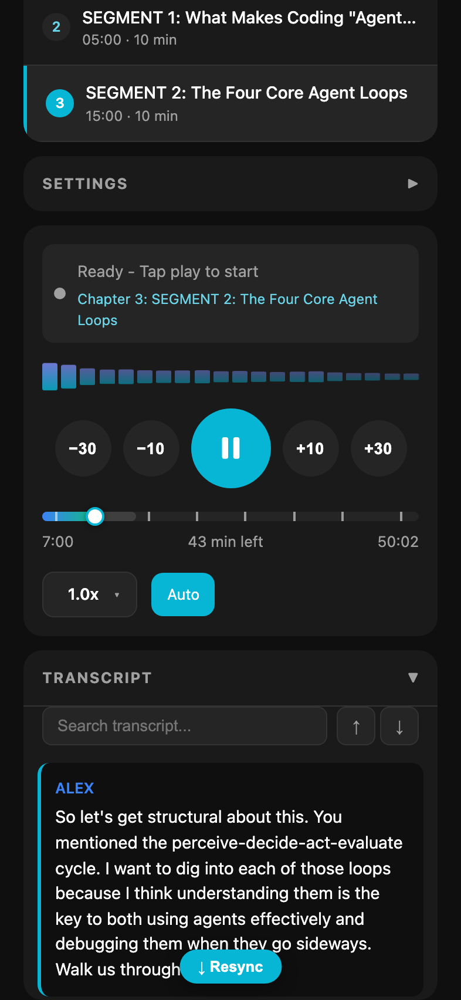
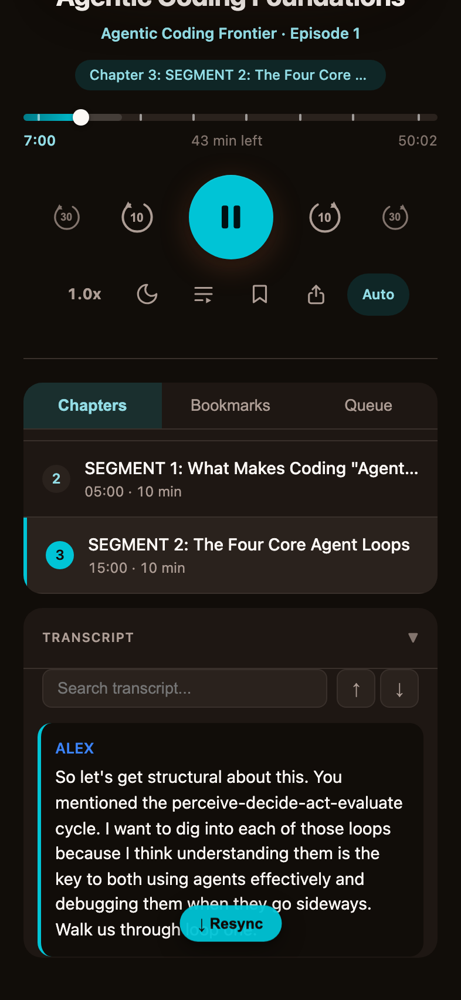
After: floating capsule inset from the edges — artwork thumb, show-accent progress hairline and play disc — over the artwork-tinted episode list.
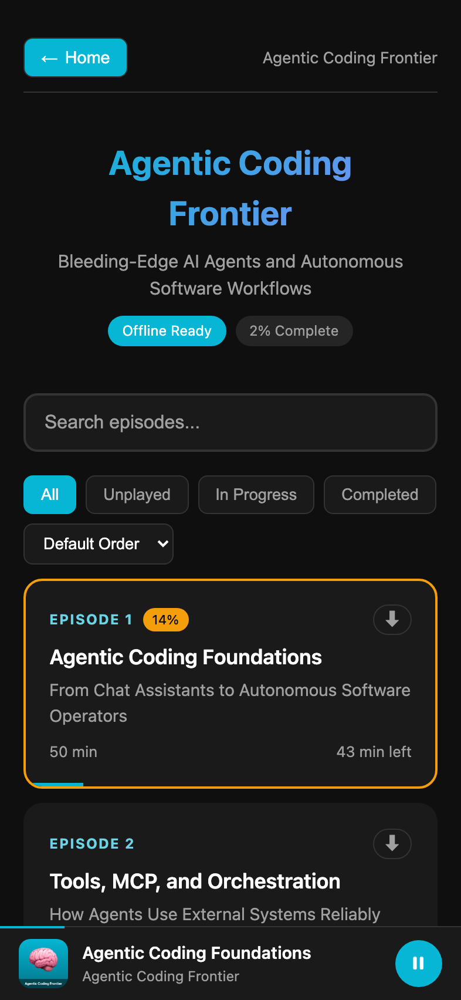
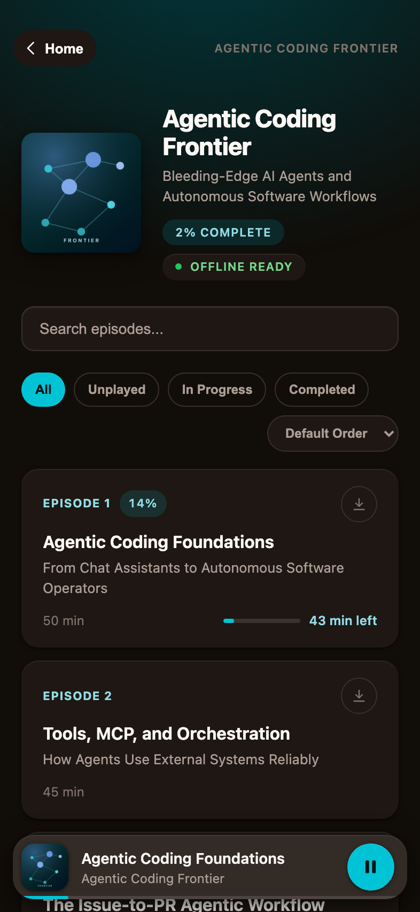
After: mobile modals are bottom sheets with a grabber; option pills on the token system, active state in accent fill with dark ink, countdown in the warning hue.
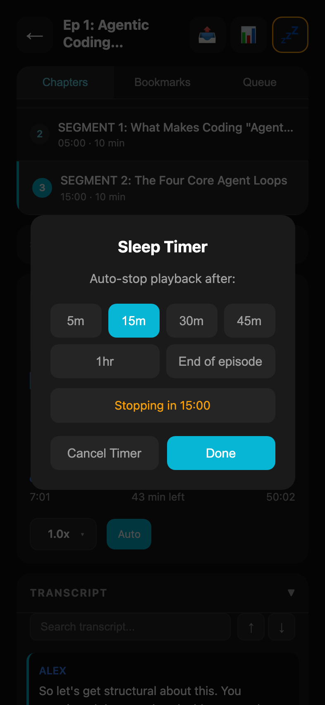
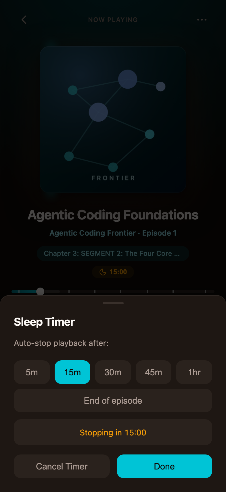
After: raised surface with edge light, Retry as a quiet chip; toast enters with a spring rise (reduced-motion: instant).
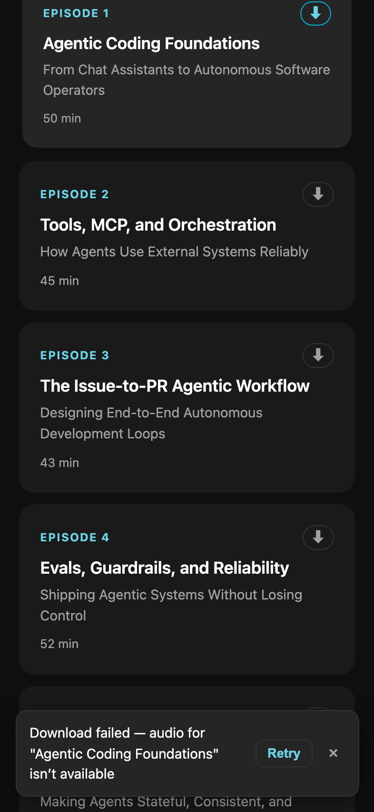
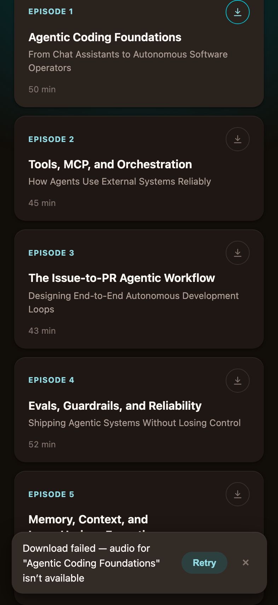
Two-column home grid; player column centered with the same hero treatment.
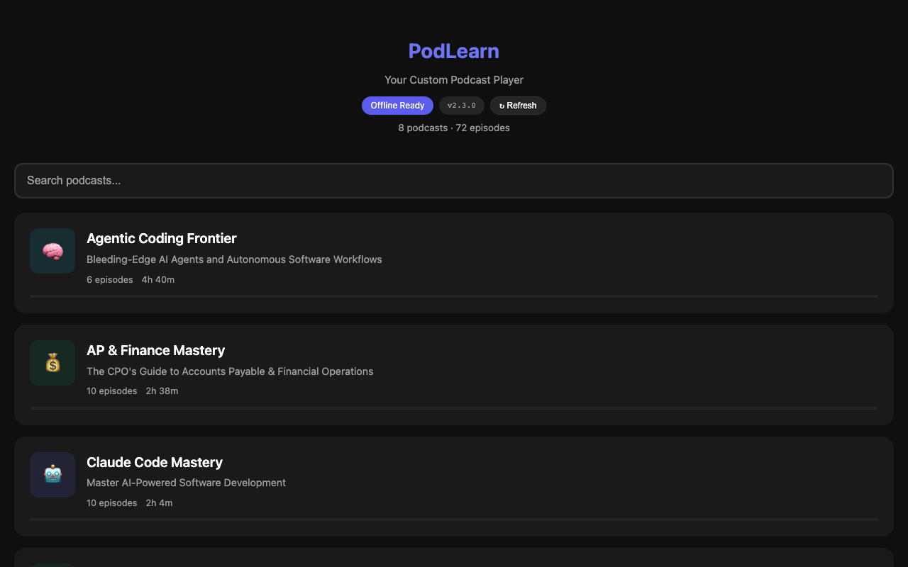
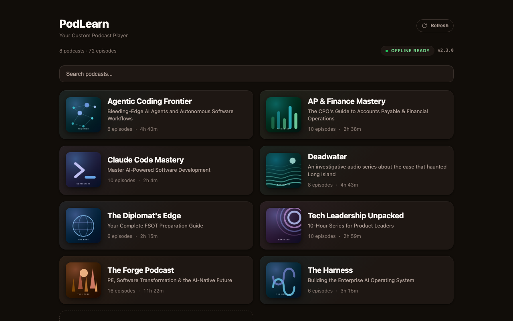
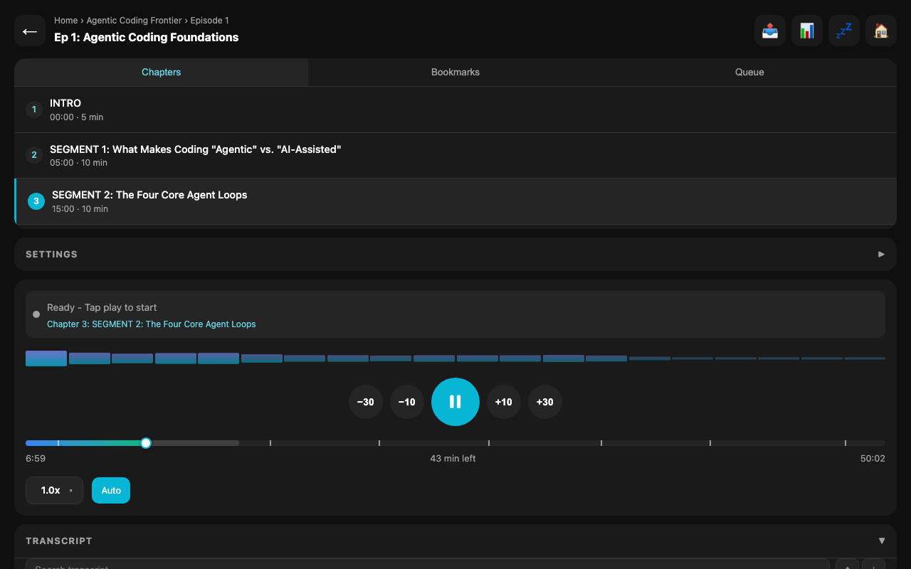
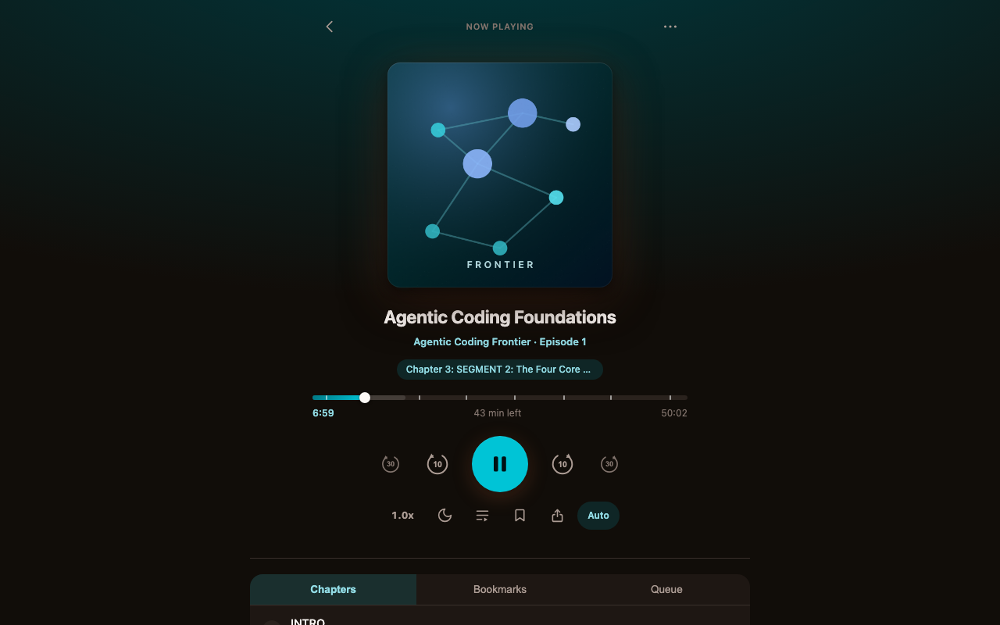
Longest episode title (55 chars, balanced two-line wrap at 0% progress) and the warm-hue worst case (The Forge, h=62) where show accent and shell are nearest in hue.
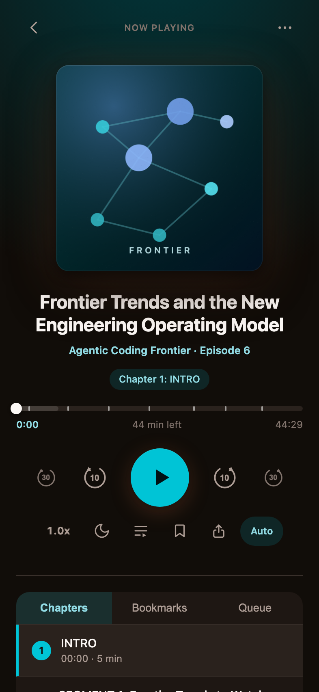
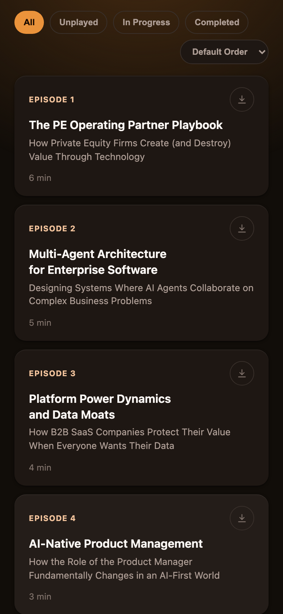